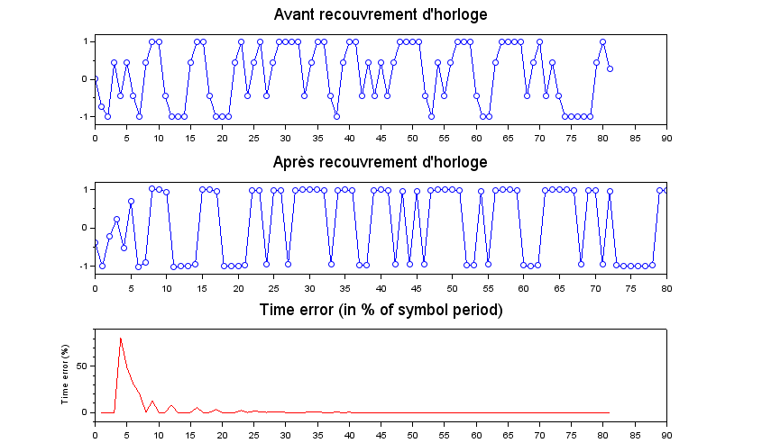

Description
Given an input oversampled binary signal, this function will downsample the signal at the symbol rate, and synchronize the sampling points with the signal clock.
Example
nsymb = 120; // Generate 120 symbols osf = 9; // Input oversampling factor = 9 samples / symbol // Creation of a simple signal: NRZ filtered by its matched filter // (e.g. a moving average) x = ma(nrz(prbs(nsymb),osf),osf); // Apply a fractionnal delay so as to have a desynchronized signal // (otherwise the signal would be already synchronized) x = frac_delay(x, osf/2); // Proceed to clock recovery cr = clock_rec_init(osf); [cr,y] = clock_rec_process(cr,x); // --> y is now sampled at one sample / symbol and synchronized /////// /////// PLOTTING THE RESULTS scf(0); clf(); // Initial sampling points subplot(211); plot(x); // Resampled output subplot(212); plot(y); |  |  |

Example of clock recovery